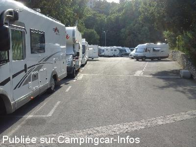
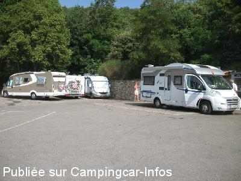
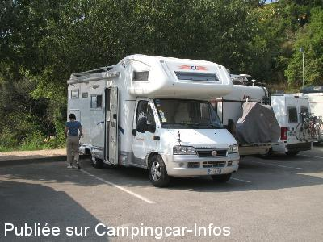
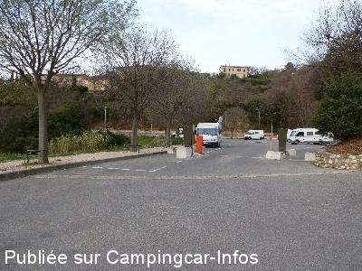
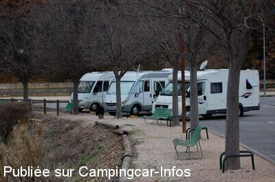
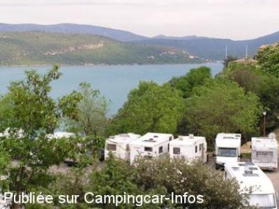

ASN = Aire de services avec stationnement nuit possible de :
SAINTE CROIX DU VERDON
(N° 449)
Accès/adresse :
Route du Lac
04500 SAINTE CROIX DU VERDON
04500 SAINTE CROIX DU VERDON
Latitude : (Nord) 43.7608° Décimaux ou 43° 45′ 38′′
Longitude : (Est) 6.1516° Décimaux ou 6° 9′ 5′′
Tarif : 2015
Stationnement 20 h / 8 h, services : 7 €
Type de borne : Autre
Services :


Commerces
Restaurant
Autres informations :
Du 1/10 au 31/03, pas de services
25 emplacements, goudronnés, un peu en pente.
Stationnement limité 2 nuits

Le 16/09/2015 par Tof

Le 11/01/2015 par Ranocchio

Le 11/01/2015 par Ranocchio

Le 23/04/2014 par PIERRE74

Le 26/01/2010 par LEVOYAGEUR68

Le 10/05/2007 par Erland
de
Tof
le 16/09/2015 :
Bonjour,
De passage fin juillet 2015, emplacement sympa si vous êtes face au lac sinon bof, aire saturèe, j'ai préféré descendre au camping municipal qui se trouve plus bas que l'aire de service. Au fond du camping il y à portail pour accéder au lac.
Bonjour,
De passage fin juillet 2015, emplacement sympa si vous êtes face au lac sinon bof, aire saturèe, j'ai préféré descendre au camping municipal qui se trouve plus bas que l'aire de service. Au fond du camping il y à portail pour accéder au lac.
de
Malin
le 27/08/2015 :
§ Air camping car très chargé l'été. 7 euros la nuit avec accès au toilette et un point d'eau.Vue magnifique sur le lac si vous stationnez sur le coté.Le lac se trouve à près d'1 KM de l'air de stationnement.Lac avec un eau propre et agréable.Village très joli avec tous commerces.commerces. Accès WIFI gratuit pres de l'office du tourisme à 100 mètres au dessus de l'air.C'est à faire 1 ou 2 jours.
§ Air camping car très chargé l'été. 7 euros la nuit avec accès au toilette et un point d'eau.Vue magnifique sur le lac si vous stationnez sur le coté.Le lac se trouve à près d'1 KM de l'air de stationnement.Lac avec un eau propre et agréable.Village très joli avec tous commerces.commerces. Accès WIFI gratuit pres de l'office du tourisme à 100 mètres au dessus de l'air.C'est à faire 1 ou 2 jours.
de
Olivier372
le 10/05/2015 :
De passage le 06/05/2015
Aire propre et calme avec une vue magnifique sur le lac mais presque pleine à cette époque de l'année.
Dommage que les emplacements ne soient pas un peu plus large.
Village à 5 min et lac à 10 min à pied.
De passage le 06/05/2015
Aire propre et calme avec une vue magnifique sur le lac mais presque pleine à cette époque de l'année.
Dommage que les emplacements ne soient pas un peu plus large.
Village à 5 min et lac à 10 min à pied.
de
steph & mumu
le 12/10/2014 :
Je tiens à préciser que c'est l'horreur en été. nous sommes restés 1 nuit seulement au mois d'aout. nous étions tassés les uns sur les autres. certains se permettent même d'y rester une semaine entière et se venter de payer un jour sur deux .... 1 m de large entre chaque camping car, porte contre porte. dans la fin de soirée des hollandais et anglais se sont meme permis de stationner en travers face a notre camping car ! impossible de sortir ! en cas d'incendie j'imagine le pire, et la commune accepte .... je vous déconseille cet aire l'été !!!!!!!!
Je tiens à préciser que c'est l'horreur en été. nous sommes restés 1 nuit seulement au mois d'aout. nous étions tassés les uns sur les autres. certains se permettent même d'y rester une semaine entière et se venter de payer un jour sur deux .... 1 m de large entre chaque camping car, porte contre porte. dans la fin de soirée des hollandais et anglais se sont meme permis de stationner en travers face a notre camping car ! impossible de sortir ! en cas d'incendie j'imagine le pire, et la commune accepte .... je vous déconseille cet aire l'été !!!!!!!!
de
maquet
le 06/10/2014 :
Belle aire si les campings cars étaient moins serrés, mais elle a le mérite d'exister et puis le centre du village est près.
Belle aire si les campings cars étaient moins serrés, mais elle a le mérite d'exister et puis le centre du village est près.
de
PIERRE74
le 23/04/2014 :
De passage le 04/04/2014, aire calme, proche du village, sanitaires propres et en bon état de fonctionnement,un employé de la commune passe matin et soir pour faire payer le stationnement vue magnifique sur le lac nuit calme mais ce doit être tout autre chose en été
De passage le 04/04/2014, aire calme, proche du village, sanitaires propres et en bon état de fonctionnement,un employé de la commune passe matin et soir pour faire payer le stationnement vue magnifique sur le lac nuit calme mais ce doit être tout autre chose en été
de
Fred MARTIN
le 08/09/2013 :
Cette aire à le mérite d'exister et d'offrir services et toilettes pour 6 €. A proximité du village et du lac. Très belle vue sur celui-ci.
Mais en saison (même début septembre), on est tellement serré qu'il est exclu de mettre une table ou une chaise.
Acceptable donc si l'on passe la journée au lac et la soirée au resto!
Préférer sans doute le camping!
Cette aire à le mérite d'exister et d'offrir services et toilettes pour 6 €. A proximité du village et du lac. Très belle vue sur celui-ci.
Mais en saison (même début septembre), on est tellement serré qu'il est exclu de mettre une table ou une chaise.
Acceptable donc si l'on passe la journée au lac et la soirée au resto!
Préférer sans doute le camping!
de
PtiLouis13
le 20/03/2012 :
y avons passé une nuit du 17 au 18 mars. Merci à la commune pour cette aire calme avec une vue superbe sur le lac. Dommage que l'eau était hors service.
y avons passé une nuit du 17 au 18 mars. Merci à la commune pour cette aire calme avec une vue superbe sur le lac. Dommage que l'eau était hors service.
de
rafale
le 29/02/2012 :
Entre le 1er octobre et le 31 mars stationnement gratuit mais pas d'eau, ni de vidange WC (protection contre le gel. Seule la vidange des eaux usées est possible.
Entre le 1er octobre et le 31 mars stationnement gratuit mais pas d'eau, ni de vidange WC (protection contre le gel. Seule la vidange des eaux usées est possible.
de
SE07
le 23/09/2011 :
§
Nous sommes restés 3 nuits sur cette aire, du 16 septembre au 19 septembre 2011, beaucoup de monde ; nous avons payé 6 euros par nuit alors que vous signalez qu'à partir du 15 septembre c'est gratuit ! à vérifier
§
Nous sommes restés 3 nuits sur cette aire, du 16 septembre au 19 septembre 2011, beaucoup de monde ; nous avons payé 6 euros par nuit alors que vous signalez qu'à partir du 15 septembre c'est gratuit ! à vérifier
de
jl delaroche
le 23/10/2009 :
L'aire de services est ouverte jusqu'au 15/10. Après cette date, fermeture du site. D'après la personne qui encaisse l'argent, s'il n'y avait que le maire, l'aire serait fermée.
L'aire de services est ouverte jusqu'au 15/10. Après cette date, fermeture du site. D'après la personne qui encaisse l'argent, s'il n'y avait que le maire, l'aire serait fermée.
de
fusible76
le 08/09/2009 :
Effectivement le parking est maintenant situé juste en dessous de l'entrée du village et donc bien au dessus du lac.
Arrivé le 1er Septembre, parking plein, stationnement anarchique, places avec vue sur le lac limitées et bien sûr occupées... Le tout pour 6€, sans calme garanti. Avons rejoint le camping municipal en dessous au bord du lac pour 12€ avec électricité, emplacements larges et délimités, sanitaires camping, etc... §
Effectivement le parking est maintenant situé juste en dessous de l'entrée du village et donc bien au dessus du lac.
Arrivé le 1er Septembre, parking plein, stationnement anarchique, places avec vue sur le lac limitées et bien sûr occupées... Le tout pour 6€, sans calme garanti. Avons rejoint le camping municipal en dessous au bord du lac pour 12€ avec électricité, emplacements larges et délimités, sanitaires camping, etc... §
de
couret
le 13/06/2009 :
Aire, ou plutôt parking goudronné, pentu, déjà saturé; les camping-cars sont serrés les uns contre les autres à l'identique d'un parking à voitures, et le gardien vous attend de pied ferme pour en rajouter encore !!! Effectivement à 6€, il vaut mieux faire quelques kms et aller aà l'un des deux campings les plus proches qui pratiquent un tarif privilégié CC à 8€, ou à l'aire de Moustiers (en contre bas du village, accessible à pied) à également 6€. Vraiment pas sympa de nous témoigner aussi peu de considération ?
Aire, ou plutôt parking goudronné, pentu, déjà saturé; les camping-cars sont serrés les uns contre les autres à l'identique d'un parking à voitures, et le gardien vous attend de pied ferme pour en rajouter encore !!! Effectivement à 6€, il vaut mieux faire quelques kms et aller aà l'un des deux campings les plus proches qui pratiquent un tarif privilégié CC à 8€, ou à l'aire de Moustiers (en contre bas du village, accessible à pied) à également 6€. Vraiment pas sympa de nous témoigner aussi peu de considération ?